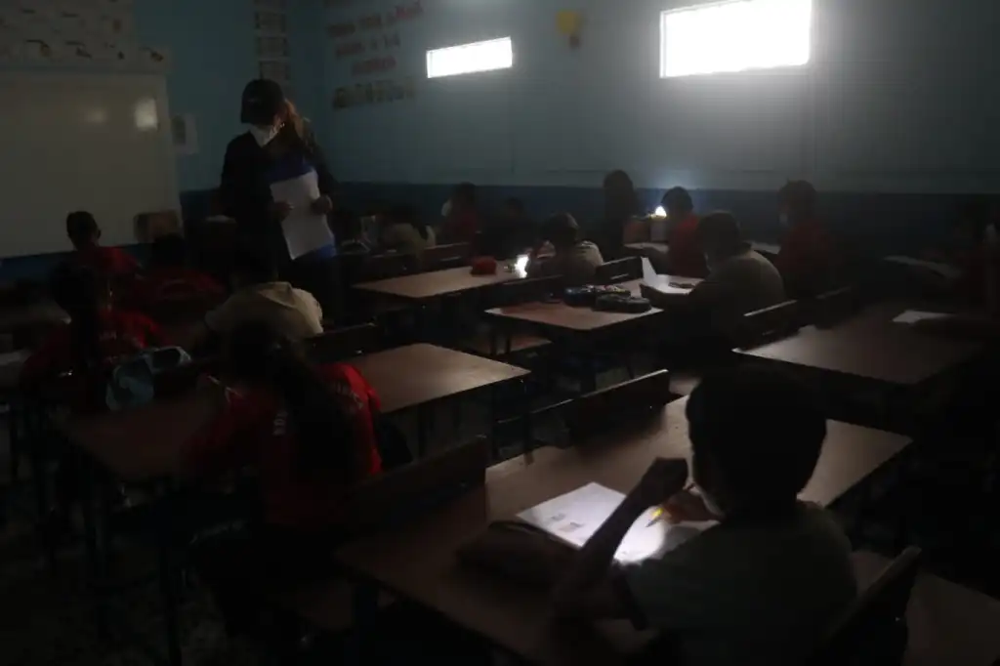
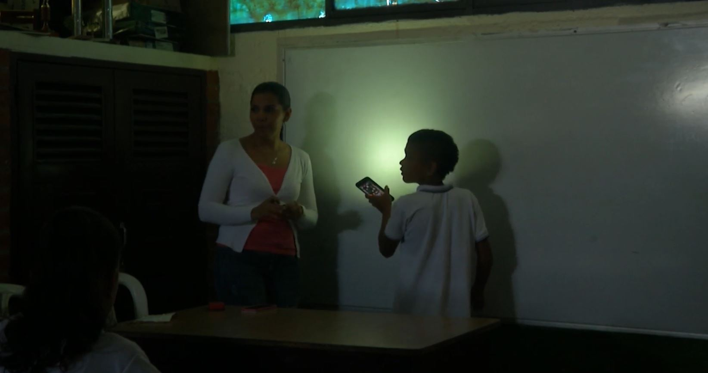
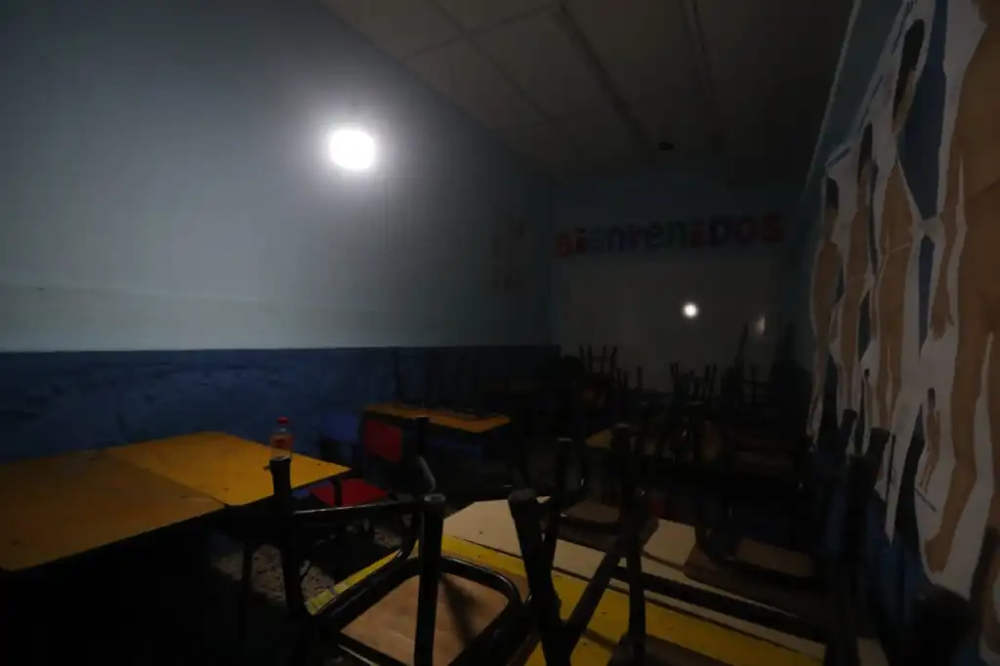
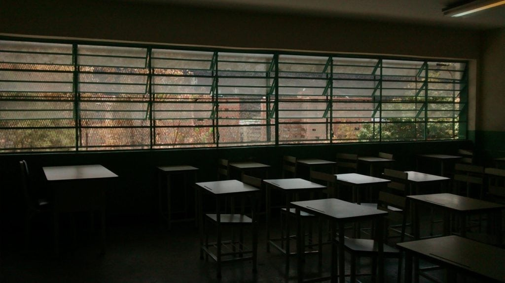
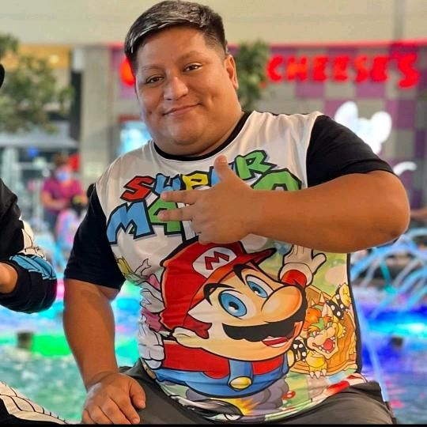
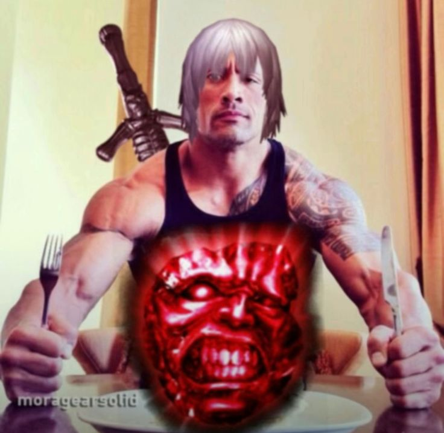
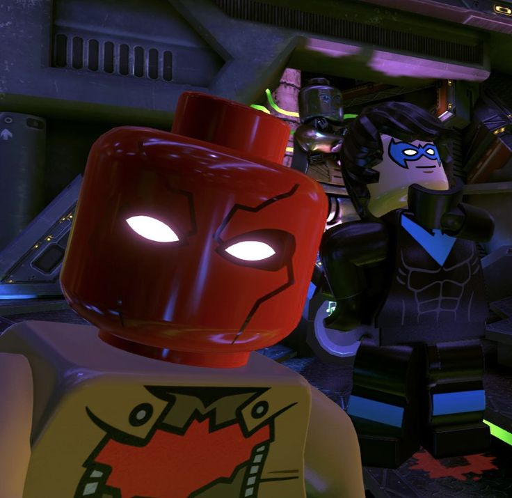
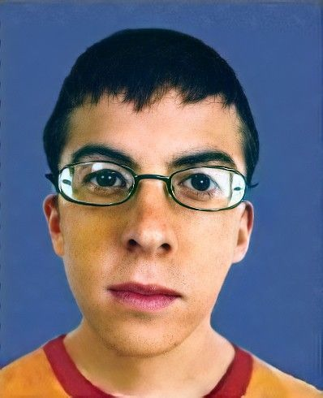

Galeria/Ejemplos de la problematica





¿Estas buscando el mejor proyecto de comfandi?
¡Ya lo encontraste!




En zonas del colegio (huerta, pasillos externos o punto de evacuación) la iluminación y señalización falla durante cortes eléctricos breves. Se requiere un punto de luz autónomo alimentado por energía renovable, que funciones de manera autonoma y que almacene energía y alimente un las zonas con poca luz.

Encargado de el diseño y creacion de la maqueta 3D

Encargado de la programacion
y el mantenimiento de el proyecto

Encargado de la investigacion
y diseño de las presentaciones

Encargado de la investigacion
sobre casos reales y analisis sobre estos
Mediante la botella la cual expulsa agua mediante un tubo, esta agua cae a un molino que produce energía hidráulica. Esta energía mueve una cadena que impulsa un motor generador. La corriente alimenta activa una bomba de agua que envia corriente a un motor, que redirecciona la corriente de agua enviando el agua nuevamente a la botella y también envía energía a un LED que simula los bombillos.

Nuestro proyecto puede evolucionar con varias mejoras tecnológicas para aumentar su eficiencia y utilidad dentro del colegio.
Agregar una batería para almacenar energía y mantener la luz encendida incluso sin flujo de agua.
Incorporar pequeñas hélices para generar electricidad usando viento.
Instalar sensores que enciendan la luz automáticamente cuando oscurezca.
Diseñar un molino más eficiente para generar mayor cantidad de energía.